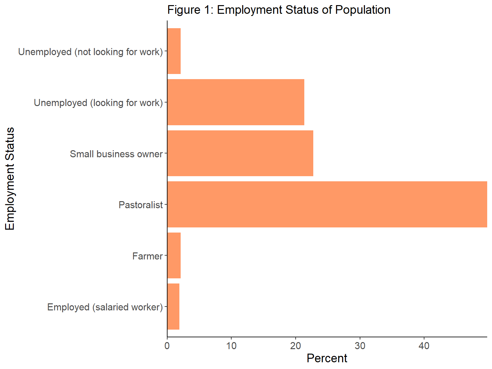
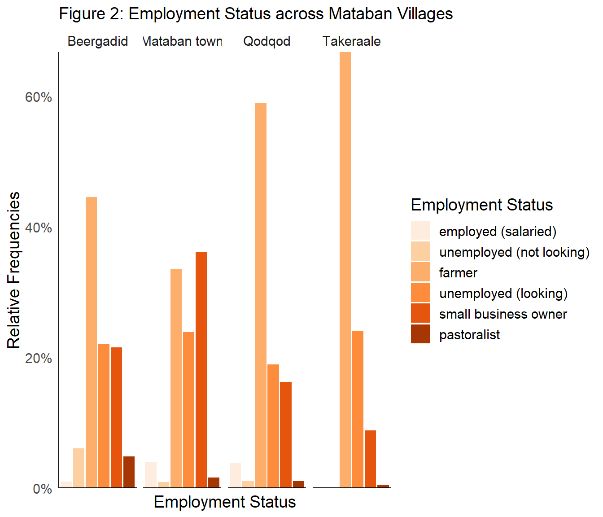

Understanding livlihood outcomes are diffrentiated across four villages in Mataban District of Somalia:
a path towards reslience in climate and conflict affected communities
Local Livlihood Differences in Mataban, Somalia
Mahelet Gennene 1, 
mg7570a@american.edu
1 SIS, American University
Introduction
Livelihood choices and opportunities are constrained by vulnerabilities to climate change and conflict in Somalia. The International Organization on Migration (IOM) cites extreme weather patterns such as droughts and floods intensifying conflict over scarce resources between communities. An assessment of differences of livelihood outcomes across conflict and climate risk prone regions within Mataban District of Hirshabelle state in Somalia is important for building resilience and mitigating displacement.
Objectives
- Better understand locally the factors that influence livelihoods in Hirshabelle state of Somalia
- Inform a comparative location report for IOM humanitarian and labor needs programming
- Question: Is there a relationship between different villages in the region and livelihood outcomes?
Hypothesis
Ho: the proportion of people from each village is independent of livelihood outcome measured by employment status
Ha: the proportion of people from each villages is different for various livelihood outcomes measured by employment status
Methods
The data is derived from the IOM Somalia’s COSI 2.0 Mataban dataset. The survey for COSI (Community Stabilization Index) was piloted by IOM Somalia in September of 2022 across four locations of Somalia’s Mataban district: Mataban Town, Beer-Gadid, Qodqod, and Takaraale. Data collection methods include community mapping and qualitative surveys of randomly sampled respondents above 18 years old.
- 1474 observations, 381 variables
- 2 categorical variables of interest
- Exposure: location - 4 villages/towns in Mataban district
- Outcome:employment status - response to “What is your employment status?”
Data Analysis Plan
- Descriptive statistics: highlight characteristics of data through relative frequency distributions of each variable
- Statistical tests: a chi-square (Χ2) test of independence to test the hypothesis of whether two categorical variables are related to each other. A significance level (alpha) of 5% is chosen.
Results
As part of objectives previously defined, this report presents key findings from the statistical analysis of the data.
The relative frequency distribution of Table 1 below reveals that 12.6% of households lived in Qodqod, making it the least populated. In comparison, 39.1% of households reside in Takeraale. There is minor variation in the geographic distribution among the three major villages of Beergadid, Mataban Town, and Takeraale.
| Location | N | Percent |
|---|---|---|
| Beergadid | 413 | 28.0 |
| Mataban town | 432 | 29.3 |
| Qodqod | 185 | 12.6 |
| Takeraale | 444 | 30.1 |
The primary livelihood in Hirshabelle is pastoralism, occupying nearly 50% of residents. Interestingly, out of an estimated 23% of the population who are unemployed, only 2% are not searching for work while the vast majority (21%) are actively searching for employment or livelihood.

According to Table 2’s Chi squared test of independence below, there is sufficient evidence to reject the null hypothesis that the proportion of people from each village is independent of livelihood outcomes. The probability that we would get a sample with these observed differences of proportions of people in villages and employment status is very small. It is signified by a p-value of 2.2e16 which is nearly zero and less than a significance level of α=0.05. While the type of relationship is not specified, we can conclude that there is an association between location and employment status variables. These results can help target livelihood needs and opportunities across the four villages. For instance, Qodqod which is underrepresented in small-scale businesses may benefit from private sector investment to expand income generating opportunities.
| Employment Status | Beergadid | Mataban Town | Qodqod | Takeraale | Total |
|---|---|---|---|---|---|
| Employed (salaried worker) | 1.0 | 3.9 | 3.8 | 0.0 | 1.9 |
| Farmer | 6.1 | 0.9 | 1.1 | 0.0 | 2.1 |
| Pastoralist | 44.6 | 33.6 | 58.9 | 66.7 | 49.8 |
| Small business owner | 22.0 | 23.8 | 18.9 | 24.0 | 22.8 |
| Unemployed (looking for work) | 21.5 | 36.1 | 16.2 | 8.8 | 21.3 |
| Unemployed (not looking for work) | 4.8 | 1.6 | 1.1 | 0.5 | 2.1 |
| Note: X-squared = 223.06, df = 15, p-value < 2.2e-16 |
A more detailed look in Figure 2 shows that Mataban Town has the highest share of unemployed people, with 36.1% of people seeking work and only 1.6% not seeking work.In contrast, in Takeraale only 8.8% of people report being unemployed despite being the most populated village. Similar to Qodqod, Pastoralism is over represented in Takeraale compared to other livelihood options.

Conclusion
The study reveals that types of livelihoods that exist in Hirshabelle are significantly related across the four villages of Beergadid, Mataban Town, Qodqod, and Takaraale . This could be as a result of potential differences in socio-economic conditions,clan composition, and political instability that contribute to existing climate and conflict risks identified by IOM. Insight into the association between location(villages) and employment status informs our understanding of more granular characteristics in order to develop context specific humanitarian and development programs.